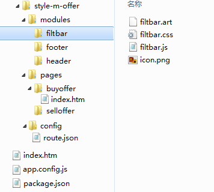

1688前端无线开发规范
前言
阿里主客 APP 是我们绝大多数 H5 应用的载体，为保证主客 APP 及 H5 应用的性能和体验，我们约定了如下开发规范：
H5 插件分类
主客上的 H5 插件分两种类型：一种是 AppCache 插件，属于长时间在主客上存在的应用，如 detail、交易等；另一种是 WAP 插件，属于短时间在主客上出现的页面，如活动运营页面。 这两种 H5 应用的开发模式是有区别的，故分开描述：
AppCache 插件开发规范：
1、申请新Aone分支
AppCache 类型的 H5 插件，必须申请新的 Aone 分支来开发，分支的命名规则为 style-m-xxx， 其中xxx为应用自定义的名字，如 style-m-detail。
此 style 分支为该 H5 应用专属，分支的所有文件都将最终同步到阿里主客中，不允许存放任何与分支无关的代码。
分支中所有文件经过 style 编译脚本合并压缩后的总大小不得超过 3M，否则编译报错！。
2、建议的分支目录结构
- index.htm 为应用的入口页面。
- app.config.js 为应用的配置文件，格式参照：app.config.js。
- index.htm 为应用的入口文件。
- modules 为应用的功能模块目录，各子模块创建目录，将所属的js、css、模板文件(tpl)、图片资源统一放置在该目录下（是否还需要子目录根据应用的设计需要）。
- pages 目录放置的是应用的其它入口页面（非必须）。
3、开发规范
- 必须使用 lofty 基础框架，因为 lofty loader 会调用主客的缓存 API，默认从缓存中加载资源文件，有利于性能提升。
- 基础组件必须公用 lofty-mobile 中的组件库，如果组件不满足需求，可以提供更优版本的组件，但是不允许在业务分支中建设单独的基础组件库，需要尽可能减小主客的体积，并把基础组件库共建的更加强大。
- 对于 html 页面上同步引入的 script、link、img 等分支内部的 style 资源，请使用相对路径引用，这样主客可以找到缓存文件，以更好的使用缓存机制。
- 对于 CSS 中引用的背景图片资源，也使用相对路径引用。
- 对于 JS 不允许再使用 merge 文件，CSS 尽量少用 merge 文件，因为无法最大化利用主客的缓存机制，尤其是破坏了对基础库、公共组件的缓存，造成主客app体积过大。（使用lofty框架异步加载解决）
- 模板渲染引擎统一使用 artTemplate 。
WAP 插件开发规范：
- 与目前普通 web 页面的开发模式基本相同，统一使用 lofty 基础框架。
- 不需要使用独立 style 分支。
- 必须启用 styleCombine。CSS、JS 走 CDN，AMD 模块做动态合并。（由于不缓存数据，故需要减少请求数，利用好浏览器自身的缓存）
- 需要长期在主客中存在的页面不适合做成wap插件形式。
应用框架的使用
旺铺线正在建设 butterfly mobile 版本，属于单页面应用的解决方案。各位可以关注下。appframework UI 也属于应用框架的一种，但是耦合性比较强，仅推荐当下非常紧急的业务使用。同时鼓励各位在业务实际中积累产出更好的应用架构。